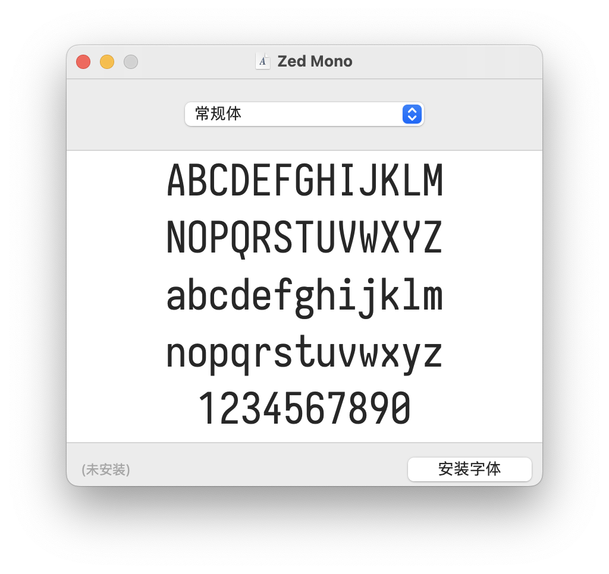
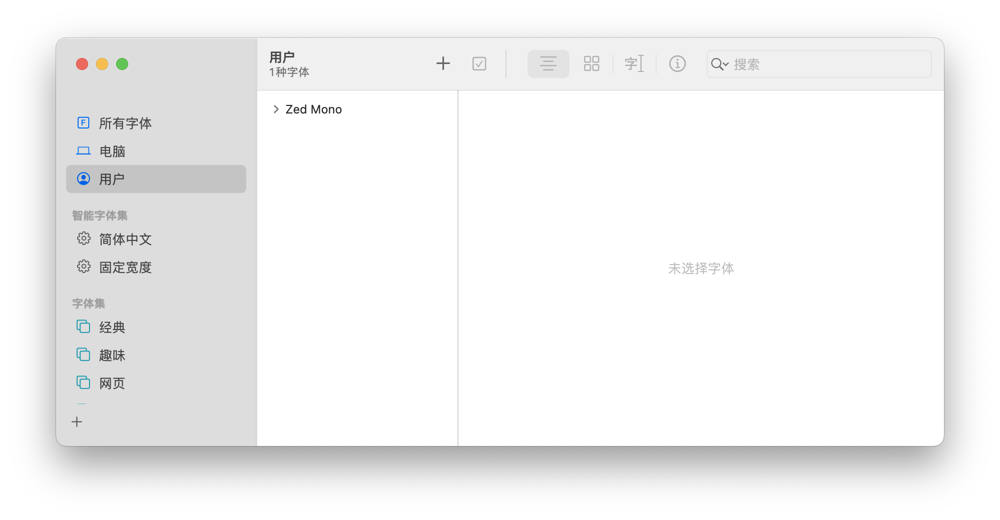
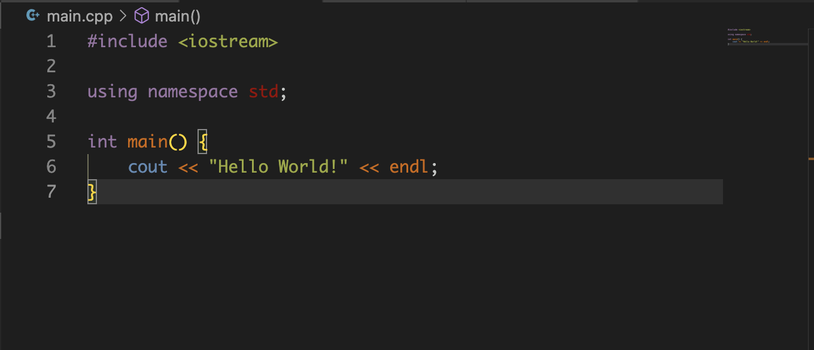

前言
听说最近Atom团队在Alpha测试一款新的编辑器Zed，使用Rust编写，由GPU来渲染用户界面，支持多人实时协同，目前已经支持包括C/C++、Python、GO、JavaScripy、Markdown、Rust等11种语言，而他们的字体Zed-Mono在我看来具有一种更加舒适的设计，在他人分享的图片上看起来感觉比vscode的原生字体更加生动，因此我在这里分享一下我安装这款字体的经历。
这款字体目前可以在GitHub上找到，项目地址为https://github.com/zed-industries/zed-fonts.git。
安装
| 老tip：我已经把build好的ttf文件分享到阿里云盘了，地址：https://www.aliyundrive.com/s/voRPDrZYBgj |
|---|
我们可以先通过git将项目clone到本地：
1
2
3mkdir zedf && cd zedf #寻找一个存放项目文件的地方
git clone https://github.com/zed-industries/zed-fonts.git
cd zed-fonts
根据README.md文件中的描述，需要我们运行npm install来安装节点模块，所以需要可以运行npm：
1
2
3
4
5
6
7#在MacOS系统中，可以使用Homebrew包管理工具来安装npm
brew search node #npm在Node v0.6.x版本后已经内建于Node系统
#在Ubuntu系统中，可以使用apt包管理工具来安装npm
apt install nodejs npm
#安装完成后，可以通过下面指令查看是否安装成功
npm -v1
2
314:32@ ~ % npm -v
8.15.0
14:32@ ~ % 1
2
3
4
5
6
7npm install #运行结束后会生成一个node_modules文件
npm run build -- contents::zed-mono
#结果会保存在zed-fonts/dist中
#14:35@ dist % ls
#zed-mono
#14:36@ dist % ls zed-mono
#ttf ttf-unhinted woff2 zed-mono.css
有时候中间会报一些错误，需要结合实际情况进行修正，例如当我在刚开始安装时，报告错误：找不到External dependency <ttfautohint>。于是我在网上找到ttfautohint文件并下载到本地，并在terminal中运行：
1
export PATH=${PATH}:/ttfautohint的绝对路径
1
npm run build -- contents::zed-mono
设置
之后进入/dist/zed-mono/ttf，这里会包含很多ttf字体文件，将它们全选后打开：

选择安装字体，系统字体册中就可以找到Zed Mono字体：

之后打开Vs
Code，进入设置搜索font，在Font Family处修改为Zed Mono后就会自动加载新字体。
效果
实际效果如下：
